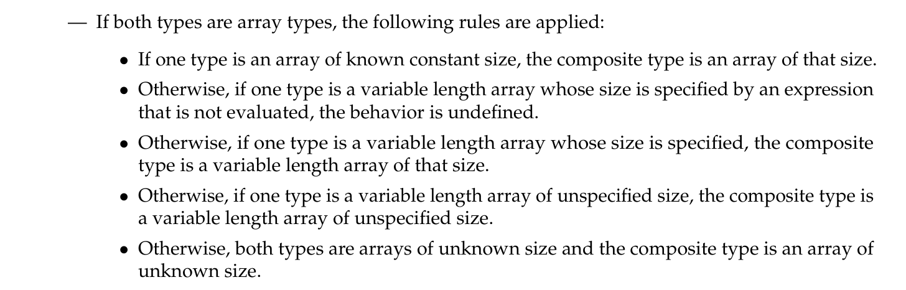
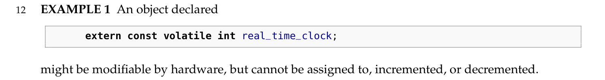
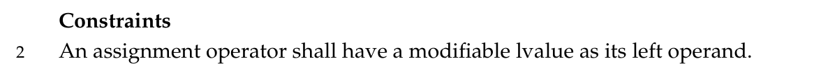
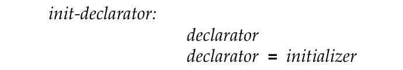
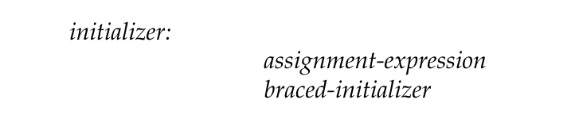
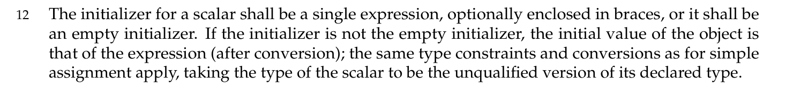
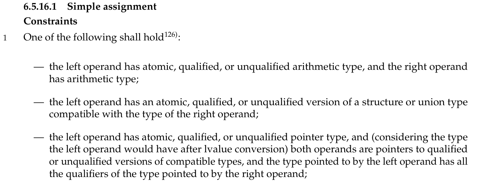
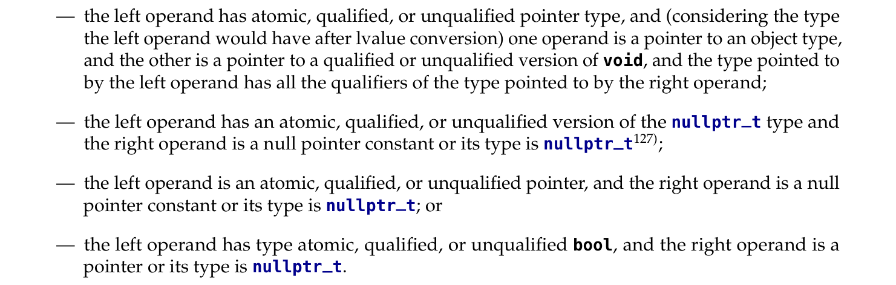

C 赋值运算符条件探讨一则
Comment前置知识：至少需要知道 C 语言中的 (
const) qualifier 的修饰对象
读 C23 手册读到了赋值运算符下面的一个例子：
1 | const char **cpp; |
假如 line 4 的赋值可以执行，那么最终 line 6 会改变 const char c 的值。因此不被允许。
但是仔细想想其实这件事情有点反直觉。因为 line 4 中，cpp 是 const char **，&c 是 char **。这里 cpp 显然是变量而不是常量，因为 const 修饰的是 char。而且因为右操作数是 char **，因而这个赋值并没有 discard 任何的 qualifier。尽管笔者理解不能使得上面的例子成功执行，这样一种目的上的设计“原因”；但并不明白，是哪几条设计或机制在事实上让这样的程序编译得不到通过。毕竟看起来是这么合理。有多合理呢？看看下面的例子：
1 | // 1. assign char * to const char * |
第一个例子看起来无比自然、甚至非常常见，以至于我就算在群友的提示下还是花了很久才弄明白第二个为什么不能通过。
这是为什么呢？我今天下了班再来写…最后那天晚上一回来就一觉睡到早上了。
首先我们来介绍一个概念：Compatible Type（兼容类型）
C 语言标准手册 6.2.7 中说：两种语言是 compatible types 如果它们相同。这一小节里介绍了结构、联合体和枚举类型的 compatible 规则。总结下来就是一一对应。可以认为，它们的每个成员必须保持类型 compatible、qualifier 一致、attribute 一致且成员名一致。另外，对于数组类型，有一套独特的规则：
总之可以理解为全等。
在此基础上，在 6.7.6.1 里介绍了指针类型的 compatible 规则：
For two pointer types to be compatible, both shall be identically qualified and both shall be pointers to compatible types.
指针本身的 qualifier 必须全等，并且它们指向的类型需要 compatible。
在 6.7.3 里介绍了一般类型的 compatible 规则：
For two qualified types to be compatible, both shall have the identically qualified version of a compatible type; the order of type qualifiers within a list of specifiers or qualifiers does not affect the specified type.
两个类型必须表达（不是拥有的 “have”）相等地 qualified 版本的 compatible 类型。比如 const volatile int 和 volatile const int。就是说，顺序可以不一样，但是个数和类型必须一样。
原文里给了一个极端的例子：
这里可以看出，
const不一定是常量，而是不能被程序修改的量。
接下来回到今天的例子。
char 和 const char 并不 compatible。因为它们是 compatible type char 的 differently-qualified version。
因而 char * 和 const char * 并不 compatible。因为它们分别指向 incompatible type char 和 const char。
因而 char ** 和 const char ** 并不 compatible。因为它们分别指向 incompatible type char * 和 const char *。
……
根据我们的观察，我们不可以把 char 赋值给 const char:
1 | const char a; |
因为 Assignment 表达式的通用约束是：
左操作数必须是可修改的左值。
注意到 line 5 的写法是 Initialization（6.7.10）。它由 initdeclarator 构成：
 initializer 进一步包含了 Assignment-expression（6.5.16）。但是这个 Assignment 表达式并不一定是带等号的式子，它经过语法单元的分解，最终下降到了 primary-expression。
1 | assignment-expression: |
所以，line 5 中的 assignment-expression 其实是 b。
1 | const char c // declarator |
在初始化当中，
规则就和 simple assignment 类似，其中 initializer 取标量类型的 unqualified 版本作为其声明类型。
手册没说聚合类型怎么办，虽然实际上都是推广了的。也有可能是我找错位置了。
我们可以把 char * 赋值给 const char *：
1 | const char *a; |
其成立的理由在于，它两侧的类型符合 Assignment 表达式 的要求。
 此处适应的条件是第三个：
左操作数有 atomic, qualified or not 的指针类型（也就是任意指针），而两个操作数都指向了 或者是 qualified，或者是 unqualified 版本的 compatible types，其中：左操作数指向的类型拥有右操作数指向的类型拥有的全部 qualifier。
我们依次来看：
- 左操作数是指针类型。Good
- 左操作数指向了
constqualified 的char类型；右操作数指向了 unqualified 的char类型。char-char 之间 compatible。且{const}包含空集。Good
因而这个赋值表达式的约束成立。
再来看主角：
1 | const char **a; |
- 左操作数是指针类型。Good
- 左操作数指向了 unqualified 的
const char *类型；右操作数指向了 unqualified 的char *类型。上文提到，const char *和char *并不 compatible。Bad
即为这段代码编译不过的形式原因。
char * 的 const-qualified 类型是 char *const。所以可以：
1 | char *const *a; |